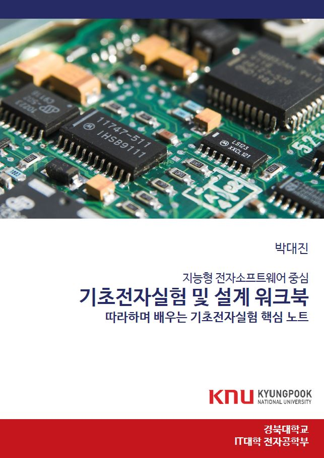

|
Authored Books
Basic Electronics Experiment Workbook (Daejin Park)
|
 |
This book covers the experimental practices for easy understanding of electronics circuit. This book focuses on teaching the practical circuit design and analysis using R, L, C, Diodes Equipments including multimeter, power supply, oscilloscope, function generator, and PSPICE are also introduced. Various interesting examples such as piano are included.
Using basic equipments: multimeter, power supply, oscilloscope, function generator
Measuring resistance, voltage, and current
Ohm's law, for series, parallel circuit
Thevenin equivalent circuit, and Maximum power transfer
Capacitor, Inductor, Diode and circuit analysis using PSPICE
Projects: Presence Sensor, Piano sound synthesis
|
Low-Power Digital System Design - Practical Approach (D. Park and J. Kwon)
 |
This book covers low-power system-on-chip design methodologies and implementation techniques, from gate-level to architectural approach and software-hardware interfaces
Toggle minimization in CMOS, gate, RTL, architecture, and software level.
Clock gating, data filtering-based toggle propagation minimization
Edge-triggered event-driven approach to reduce the active circuits
Multi-clock domain and asynchronous circuit design techniques using buffers.
Synchronizer between clock-crossing regions
Power-gating and architectural circuit design method
|
C Programming from the Scratch (D. Park and D. Lee)
 |
This book gives readers in-depth insights and deep thinking items for line-by-line c code, in terms of hardware and software interfaces. This book covers the detailed magic how the written c codes are interpreted and executed using the equipped processing unit and memory on the target processors.
Relation of Value, variable, space, address
Calculation magic on CPU: signed, unsigned, overflow, bit extension, endian
What's happening to memory on executing C code: stack, array, heap memory, function arguments, pointers, struct
How CPU interprets the C code: Interface magic between hardware and software
|
Event-Driven Sensor Processor for Low-Power IoT Systems (D. Park)
|
|
This book covers event-driven system-on-chip design methodologies and implementation techniques, from gate-level to architectural approach and software-hardware interfaces
Toggle minimization in CMOS, gate, RTL, architecture, and software level.
Clock gating, data filtering-based toggle propagation minimization
Edge-triggered event-driven approach to reduce the active circuits
Multi-clock domain and asynchronous circuit design techniques using buffers.
Synchronizer between clock-crossing regions
Power-gating and architectural circuit design method
|
Verilog HDL Practical Guide (J. An and D. Park)
 |
This book covers example-based tutorial of hardware programming using Verilog HDL.
Hello world of Verilog HDL-based hardware programming
Combinational logic design and implementation details
Sequential logic design and implementation details
Testbench modeling and simulation methodologies
Hardware realization using Xilinx FPGA
|
Javascript Node.js Practical Programming (D. Heo and D. Park)
|
|
This book covers example-based tutorial of node.js programming using javascript.
socket.io and bootstrap
media query-based dynamic web page generation
asynchronous image push technique
WaveJSon-based logic waveform visualization
CZML-based geo-spatial meta-data visualization
|
|